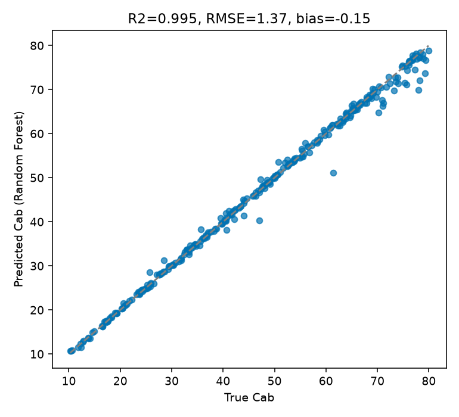

13. Machine-Learning Inversion
What you will learn
The full ML inversion workflow: LUT -> predictors/target -> train/test split -> model -> independent prediction.
Which of the 12 ML algorithms this package dispatches to, and what each argument to
get_inversion()actually controls.How to evaluate with R2/RMSE/bias on a genuinely held-out split.
Concept
Unlike 12. LUT Inversion (compare against the LUT every time), machine learning fits a regression model once on (spectrum -> trait) pairs from a LUT (11. LUT Generation), then reuses that trained model on new spectra without touching the LUT again.
RTM LUT (predictors = bands, target = trait)
|
v
Train / test split (never evaluate on training rows)
|
v
Fit model (RF, PLSR, SVM, ...)
|
v
Predict on held-out test spectra
|
v
R2 / RMSE / bias, observed vs. predicted
Python tools used
Function |
Key arguments |
|---|---|
|
Run the example
import numpy as np
import pandas as pd
from sklearn.model_selection import train_test_split
from toolsrtm.inversion import get_inversion
# lut_df: the same 1000-row LUT built in t11-lut-generation (Cab, LAI + 10 bands)
band_cols = [c for c in lut_df.columns if c.startswith("R")]
fit = get_inversion(lut_df, dep_var="Cab", inputs=band_cols, algorithm="RF",
n_samples=len(lut_df), seed=1)
print(f"R2={fit.statistics['test']['r2']:.3f} "
f"RMSE={fit.statistics['test']['rmse']:.2f} "
f"MAE={fit.statistics['test']['mae']:.2f}")
# Reconstruct the same held-out y_test to plot against (get_inversion's split
# is deterministic: train_test_split(X, y, test_size=0.3, random_state=seed))
X = lut_df[band_cols].to_numpy(dtype=float)
y = lut_df["Cab"].to_numpy(dtype=float)
_, _, _, y_test = train_test_split(X, y, test_size=0.3, random_state=1)
bias = float(np.mean(fit.predictions["test"] - y_test))
print("Bias:", bias)
Result
Printed output (exact, deterministic):
R2=0.995 RMSE=1.37 MAE=0.68
Bias: -0.14909781428882435
{kind=link}

Real output: predicted vs. true Cab on the 300 held-out test rows – points sit tightly along the 1:1 line across the full 10-80 ug/cm2 range, with only a handful of visible outliers at the high end.
Interpretation
R2=0.995 with a small negative bias (-0.15) means Random Forest slightly under-predicts Cab on average here – the opposite direction from 12. LUT Inversion’s LUT-matching result on a similar setup, and a useful reminder that different methods can have different (small) bias directions on the same problem. The handful of visible outliers cluster at high true Cab (>60) – consistent with Random Forest’s known mean-reversion tendency: an ensemble of trees can only interpolate within training-data combinations it saw, so it tends to under-predict the very top of a trait’s range and over-predict the very bottom, exactly the pattern the R side of this comparison flags too (see the “Common mistakes” note below).
Try it yourself
Swap
algorithm="RF"for"PLSR"or"SVM"and compare R2/RMSE – PLSR (a linear method) usually does worse than RF on this kind of problem, a useful sanity check that the nonlinear structure RF exploits is real.Reduce
n_sampleswell below 1000 (e.g. 100) and watch R2 degrade – direct evidence for 11. LUT Generation’s “realistic LUT size” requirement.Predict on the same 30 independently-simulated observations used in 12. LUT Inversion and compare RF’s R2/RMSE/bias against LUT matching’s, on the exact same held-out data.
Common mistakes
get_inversion’s train/test split is controlled entirely byseed– reusing the sameseedfor a different LUT size or column order won’t reproduce the same rows.Tree ensembles (RF, GB, AdaBag) can’t extrapolate past the trait range they were trained on – predictions systematically compress toward the training mean at the extremes, visible in the outliers above. This is the exact behaviour a real capstone example on this site flags when applying a trained model to real satellite data – see 19. Trait Maps & Uncertainty.
A near-perfect R2 here reflects noise-free, same-distribution simulated data – 11. LUT Generation’s noise step and any real sensor/atmosphere mismatch will both lower it in practice.
Next
14. Deep-Learning Inversion – when a neural network is worth the extra complexity over the methods above.
Using R? -> ToolsRTM Tutorial 11: Hybrid Inversion and Tutorial 12: ML Inversion Comparison